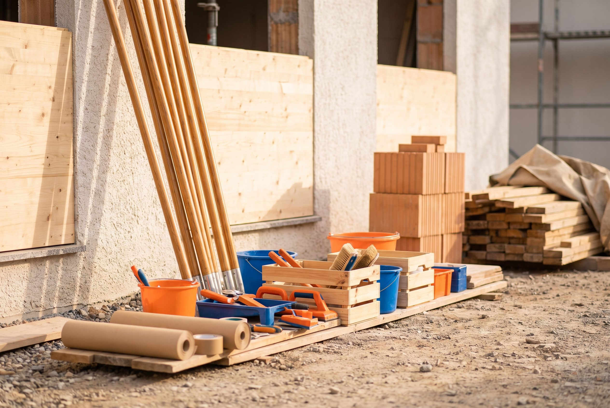

Gebäudereinigung
Von der regelmäßigen Unterhaltsreinigung bis zur einmaligen Spezialreinigung: hygienisch einwandfreie Flächen in Privathaushalten, Büros, Praxen, Gastronomie und Industrie.
Rund 58 Einzelleistungen, gebündelt in fünf klaren Kategorien – von der einmaligen Bauendreinigung bis zum laufenden Winterdienst-Vertrag. Tippen Sie auf eine Kachel für alle Details, oder schildern Sie uns direkt Ihr Anliegen.
Von der regelmäßigen Unterhaltsreinigung bis zur einmaligen Spezialreinigung: hygienisch einwandfreie Flächen in Privathaushalten, Büros, Praxen, Gastronomie und Industrie.

Vom Trockenbau über Maler- und Bodenarbeiten bis zur kompletten Sanierung: handwerkliche Arbeiten präzise und termingerecht, für ein einzelnes Zimmer oder ein ganzes Objekt.
Gepflegte Grünflächen brauchen mehr als einen Rasenmäher: Gestaltung, saisonale Pflege und Sonderleistungen – einmalig oder im laufenden Pflegeabo.
Schnee- und Eisglätte warten nicht auf Bürozeiten. Mit Rufbereitschaft, dokumentierter Räumung und Saisonverträgen bleiben Wege und Zufahrten sicher begehbar.
Kontrollgänge, technische Wartung und Kleinreparaturen aus einer Hand: Ihr fester Hausmeister-Ansprechpartner behält Ihr Objekt im Blick und koordiniert bei Bedarf weitere Gewerke.